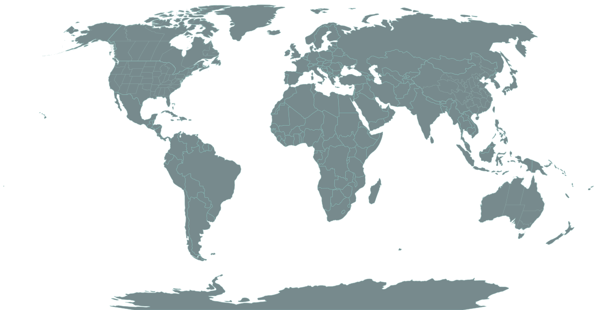
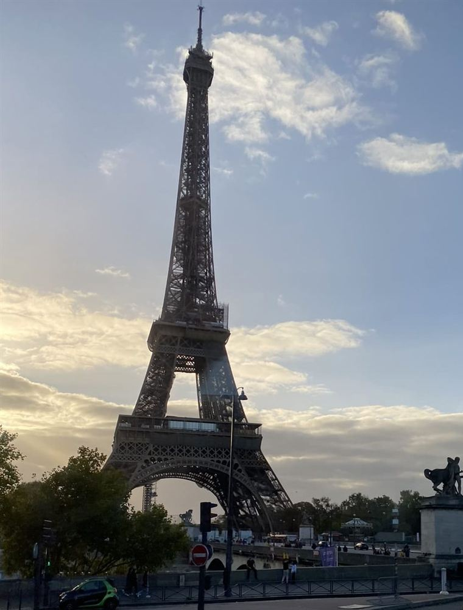
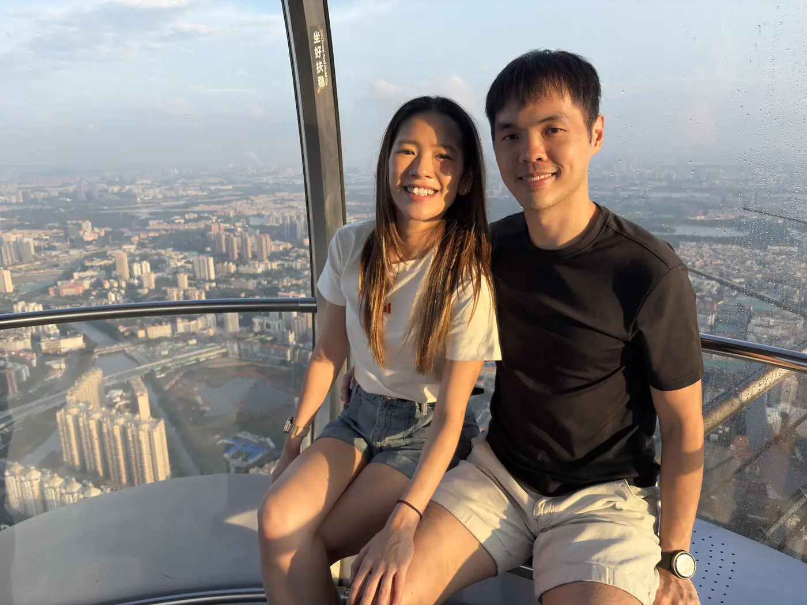
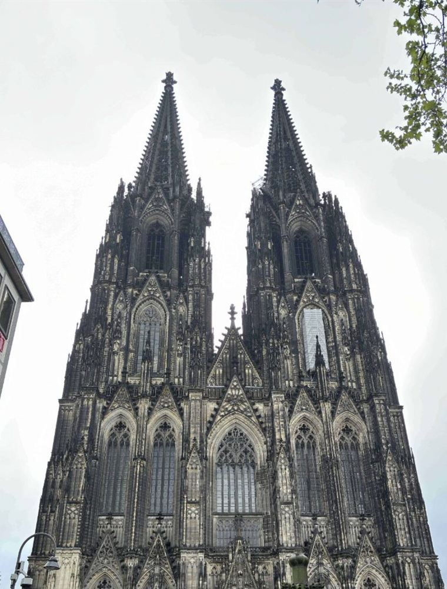

Guangzhou
Travel
Old Guangzhou · Chimelong · Baiyun Mountain · Canton Tower
Select a destination to browse trip stories and photos.
8 journals 4 continents


Western Europe22 October – 1 November 2022ParisBrusselsAmsterdamCologneHeidelbergLucerneZurich
Guangdong · Guangzhou10 – 15 May 2026Old GuangzhouYongqingfangChimelongBaiyun MountainCanton TowerScroll to zoom · drag to move · select a region or stop
Regional view
Newest first
Travel
Old Guangzhou · Chimelong · Baiyun Mountain · Canton Tower
Travel

Hiroshima · Osaka · Nara · Kyoto · Tokyo · Nagoya
Travel

Visited Melbourne & Sydney for our honeymoon
Work & Travel

Visited Germany for the world's most advanced annual live-fire cyber defence exercise.
Travel

Travelling to USA & Canada. Thanks Clare for hosting us!
Travel

Travelling to Perth and getting engaged!
Travel
Travelling to Europe for the first time!
Work & Travel

A year of travelling and working!